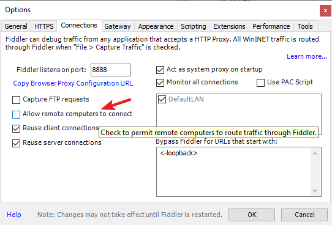
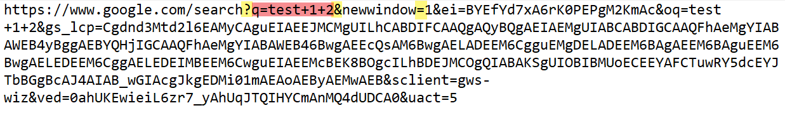

抓包的英文为：sniffer packet 或 packet capture。这篇文章介绍常用的两款软件：Wireshark 和 Fiddler。
这两者的主要区别是：
- Wireshark 可以捕捉三四层（TCP/IP)网络包，以及高层的 HTTP、HTTPS 协议（HTTPS 不能解密）。
- Fiddler 专注处理 HTTP 以及 HTTPS，主要用于 WEB 调试。
本文先介绍 Fiddler，Wireshark 后面抽空再写一篇。另外文本介绍了 HTTP 协议的一些知识，这对了解 Fiddler 和抓包很有必要，请仔细阅读。
Fiddler
使用 Fiddler 需要有一些 HTTP 协议的基础。
下载
Fiddler 是商业软件，我们下载 classic 版本就行，这个是免费的。
Fiddler 是基于 C# 开发的。主要在 Windows 运行。目前的版本是 4。如果是其他系统，需要下载其他的 Fiddler 版本（收费）。
原理
你打开软件后，Fiddler 会自动添加一个系统代理，端口号为 8888。
http=127.0.0.1:8888;https=127.0.0.1:8888下面两个都是同样
端口可以改的，位置如下：
这里有一个坑，如果你的电脑有翻墙的软件，请注意兼容问题。如果你的代理软件没有开启 系统代理, 但是在 Firefox 和 Chrome 下面都抓不到包的话，请检查你的浏览器设置
Firefox
在网络设置里面，请选择
No proxyChrome
这种情况一般是安装了
SwitchyOmega等代理插件造成的。请选择Direct解决问题或者直接开启无痕模式即可
界面
主体的左边是捕获的 http 包。右边是一些工具，其中最常用的是
Inspectors，这个是包的查看器。在这个选项中，可以查看包的头部 Headers 或者直接 Raw 格式查看。右边这一块，分为上下两部分，分别对应请求报文和响应报文左边
Body这一列是 HTTP 响应中包含的字节数（byte）如果右边报文里面出现乱码，请打开
Decode按钮，然后重启软件
点击左下角的
Capturing可以停止抓包
功能
捕捉 HTTPS 包
HTTPS 是加密的，我们需要在系统安装 Fiddler 所提供的证书，来实现 HTTPS 解密。
关于为啥要安装证书，以及证书的作用及重要性，请自行 Google 查询。很多审计系统，比如深信服，同样需要在客户电脑安装证书之后才能解密 HTTPS，实现监控。
修改 User-Agent
Fiddler 可以帮我们修改 User-Agent，这样就能伪装成任何客户端。
父请求和子请求
在一个网页中，打开一个网页的过程如下：
- 在浏览器输入 URL。
- 浏览器会发送第一个 HTTP 请求去获取页面布局的 HTML，这个请求叫做
父请求。然后服务器把 HTTP 响应发回给浏览器。 - 浏览器会分析 HTTP 响应中的 HTML。如果发现 HTML 中引用了很多其他文件，比如图片、CSS 文件、JS 文件等，浏览器会自动再次发送很多 HTTP 请求，去获取图片、CSS 文件或者 JS 文件。这些 HTTP 请求叫做
子请求。 - 当所有子请求的响应都返回后，浏览器会把 1 个父请求加上多个子请求渲染出来，这样就形成一个页面，网页就在浏览器上显示出来。
在这里可以筛选出相应的包
查看响应
HTTP 响应可能是 HTML 文档，可能是一个图片，也可能是一个 JSON。使用 Raw 选项卡可以查看完整的 HTTP 响应，WebView 可以查看 HTML 文档，ImageView 可以查看图片，JSON 可以通过 JSON tab 来查看
断点
Fiddler 本身是一个代理服务器，其可以设置断点，拦截住 HTTP，修改之后再放行。
全局断点
这种方法会拦截所有的会话，位置如下：Rules > Automatic BreakpointBefore Requests：修改 HTTP 请求
After Requests： 修改 HTTP 响应单个断点
在软件左下角的 QuickExec 输入 bpu URL（如上图），这种方法只拦截你输入的 URL。要想消除单个断点，可以在命令行中输入 bpu。这种是修改 HTTP 请求
bpafter URL 则是修改 HTTP 响应。同样输入 bpafter 则是取消单个断点。
TextWizard
这是一个可以帮助你对字符进行 Encode 和 Decode 的小工具Tools > TextWizard
常用快捷键
Ctrl + X 删除所有 SessionCtrl + A 选择所有 SessionESC 不选择任何的 SessionCtrl + I 反选 SessionDelete 删除选择的 SessionShift + Delete 删除未选择的 SessionR 重放选择的 Session （可以多个）Shift + R 多次重放选择的 Session（可以重放多个 Session）U 无条件地重放选择的 Session（不会发送 If-Modified-Since 和 If-None-Match header）Shift + U 多次无条件重放P 选择 “当前 Session” 的 “父 Session” （这个功能取决于 Referer Header）C 选择 “当前 Session” 的 “子 Session”D 选择 “重复的 Session”（有相同 URL 和 method）BackSpace 或鼠标上的 “back” 选择 “上次选择的 Session”M 给选择的 Session 加注释Alt + 鼠标左键 选择相关联的多个 SessionAlt + Q: 快速将焦点定位到 QuickExec 命令行Ctrl + I： 当选择了一个 session 的时候， 可以快速将此 session 的 URL 插入到当前命令行光标处
QuickExec
Fiddler 左下角有一个命令行工具，可以直接输入命令。常用的命令如下：
help打开官方的使用页面介绍，所有命令都会列出来cls清屏，Ctrl + X 同样效果select选择会话的命令?.png用来选择 .png 后缀的图片bpu截获 requesturlreplace www.test.com www.test-dev.com替换掉 host。（最初发送给 A 站点的 HTTP 请求，都被 Fiddler 转发到 B 站点，而在浏览器中毫无感觉，测试或者 debug 中经常有这种需求）
具体命令请参考：
https://www.fiddlerbook.com/fiddler/help/quickexec.asp
Fiddler 插件
下载地址：
https://www.telerik.com/fiddler/add-ons
JavaScript Formatter
格式化 JavaScript 代码Gallery 插件
选择很多图片的会话后，Gallery 插件可以显示这些图片的缩略图
AutoResponder
Fiddler 可以替换自动返回的一个伪造的 HTTP 响应。跟下断点修改 HTTP 响应差不多，只不过 AutoResponder 是自动的。
拖动左边的 Session 到 AutoResponder 中
然后我们选择
Find a file...，将其替换。
选中
Enable rules，激活规则。选中Unmatched requests passthrough，放行不匹配的 HTTP 请求。单击Save这样文件就会自动替换成我们选择的文件。
手机抓包
Fiddler 可以捕获 iOS、Android 等远程设备的包。
原理：安装 Fiddler 的电脑与手机设备处于同一个局域网。Fiddler 作为代理服务器。我们只需在手机指定 proxy server（fiddler 所在电脑的 IP 地址） 的地址即可。当然，如果你想查看加密的 HTTPS 流量，需要在手机设备安装 Fiddler 的证书。
首先，我们需要打开 Fiddler 的设置

然后下载生成证书的插件，手机安装证书的操作自行 Google 吧
这里可以选择要捕获的设备
Composer
这个组件可以用来发送 HTTP。
Composer 有两种编辑模式，Parsed 和 Raw
局限
可以抓取支付宝、淘宝等手机 APP 的信息, 不过有些手机走的是 HTTP2 协议，所以抓不到，这种情况就得用 wireshark 抓包了，不过抓取后，解密是个问题。
Fiddler 并不支持全部协议，目前已知的有
HTTP2、TCP、UDP、WebSocket等，如果应用走了这些协议，那么 iddler 肯定是抓不到的证书写死在 APP 中，Fiddler 不能抓取。也就是说，APP 不信任 Fiddler 颁发的证书，而只信任自己的证书
HTTP 协议
HTTP协议采用了请求/响应模型。客户端向服务器发送一个请求报文，请求报文包含请求的方法、URL、协议版本、请求头部和请求数据。服务器以一个状态行作为响应，响应的内容包括协议的版本、成功或者错误代码、服务器信息、响应头部和响应数据。
HTTP 协议采用请求/响应模型。客户端向服务器发送一个请求报文，服务器以一个状态作为响应。
请求报文 Request
一个 HTTP 请求报文由请求行（Request line）、请求头部（Header）、空行和请求数据 4 个部分组成
Request line
报文第一行（示例中因为 URL 太长，导致了换行，其实只有一行）
Post 表示请求方法（Method），常见的还有 Get。（具体参考本文的 [HTTP 请求方法])请求方法后面接请求的 URL。 之后的
HTTP/1.1表示使用的 HTTP 版本。Header
Cookie 也是 Header 中的一部分
Body
报文的实体，这个部分在 Get 方法里面是没有的。
在 Header 和 Body 之间需要空出一行。
首先声明，HTTP协议没有对传输的数据大小进行限制，HTTP协议规范也没有对URL长度进行限制。 而在实际开发中存在的限制主要有：
GET: 特定浏览器和服务器对URL长度有限制，例如IE对URL长度的限制是2083字节(2K+35)。对于其他浏览器，如Netscape、FireFox等，理论上没有长度限制，其限制取决于操作系统的支持。
POST: 由于不是通过URL传值，理论上数据不受限。但实际各个WEB服务器会规定对post提交数据大小进行限制，Apache、IIS6都有各自的配置。
HTTP 请求方法
常见的有：GET | POST | PUT | DELETE。可以理解为：对某个资源分别进行 查 | 改 | 增 | 删 四个操作。参见的 GET 和 POST
还有一个 HEAD，类似于 GET 请求，只不过服务器返回的响应中没有具体的内容，用于获取报头。
GET
是最常见的方法，用于获取资源，常用于向服务器查询某些信息。
带参数的 Get:
浏览器可以在 GET 方法中把数据传送给服务器，如下问号后面是数据，这种叫做
查询字符串（Query String)
查询字符串以名=值这样的形势出现，多个名值之间用字符&隔开。这种方式不适合传送私密数据。另外，由于不同的浏览器对地址的字符限制也有所不同，一般最多只能识别1024个字符，所以如果需要传送大量数据的时候，也不适合使用GET方式。
POST
POST 允许客户端给服务器提供更多的信息。
图中红框部分即为 POST 的内容，同样也是
名=值这样的形势出现，多个名值之间用字符&隔开。PUT
从客户端向服务器传送的数据取代指定文档的内容
DELETE
请求服务器删除指定的页面
响应报文 Response
响应报文由响应行（Response line）、响应首部（Response header）、空行、主体（Body）组成
同样，在 Header 和 Body 之间需要空出一行。
Response line
第一行，由 HTTP 协议版本号、状态码、状态消息 3 部分组成。如下：HTTP/1.1 200 OK
HTTP 状态码
状态码用来告诉 HTTP 客户端， web 服务器是否产生了什么响应
分 5 大类
1XX
100 ~ 101
信息提示，表示请求已被成功接收，继续处理2XX
200 ~ 206
成功200（OK）
最常见的，成功响应的状态码204（No Content，没有内容）
返回的 HTTP 响应只有一个状态行和 一些 Header，没有实体内容（Body）
作用如下：在不获取资源的情况下了解资源的情况，比如判断其类型
查看某个对象是否存在
测试资源是否被更改
206（Partial Content，部分内容）
服务器已经成功处理了部分 GET 请求
作用如下：迅雷或者 HTTP 下载工具都是使用 206 状态码来实现断点续传的
将一个大文档分解为多个下载段同时下载，比如在线看视频
3XX
300 ~ 305
重定向。要完成请求，必须进行更进一步的处理301（Moved Permanently)
表示请求的网页已经永久性地转移到另一个地址
作用如下：防止用户输错域名。比如 Goolge 担心用户输错域名，就把其他类似的域名买下来，比如 go0gle.com，然后重定向到
www.google.com。网站更换域名。一些网站壮大后，会换个更好的域名。比如京东以前的域名是
www.360buy.com，现在的域名是www.jd.com。有多个权重不错的域名，需要把所有的权重都传递到新域名上，这就需要 301 重定向了。**如果不设置 301，多个域名绑定在一个主机头上，会被搜索引擎认为是两个相同的站点，不利于网站的排名。绑定的域名越多，内容重复度也就越高，排名越低。
302（Found）
当我们访问一个 URL 的时候，服务器要我们访问另一个资源，这时候浏览器会继续发一个 HTTP，请求访问新的资源。比如：有些需要登陆才能查看的页面，我们会被服务器返回 302，跳转到登录页面。301 和 302 区别：两者语法上是一摸一样的，都是在 Location 中返回新的 URL。具体区别在：
301 表示旧地址的资源已经被
永久移除了（这个资源不可访问了），搜索引擎会把权重算到新的地址；302 表示旧地址的资源还在（仍然可以访问），这个重定向只是临时从旧地址跳转到新地址。
304（Not Modified）
表示上次的文档已经缓存了，还可以继续使用。304 的响应是没有 Body 的
4XX
400 ~ 415
客户端错误，请求有语法错误或请求无法实现400（Bad Request）
表示客户端请求有语法错误（如表单错误、Cookie 错误），不能被服务器所理解。401（Unauthorized）
未授权错误。有些网页采用的是 HTTP 基本认证（Basic Authentication），需要在 HTTP 请求上带上 Authorization Header，否则服务器会返回状态码 401。403（Forbidden）
表示 Web 客户端发送的请求被 Web 服务器拒绝了。如果服务器想说明为什么拒绝请求，可以在 Body 中描述原因。但是这个状态码通常表示服务器不想说明拒绝原因404（Not Found）
当你访问一个 URL，这个 URL 的域名是正确的，但是定位的资源不存在，服务器就会返回 404，告诉浏览器资源不存在（意味 URL 输入错误）5XX
500 ~ 505
服务器错误，服务器未能实现合法的请求500（Internal Server Error）
服务器内部错误。原因很多，比如代码错误、数据库连接语句出错、程序内部抛出异常、空指针错误等。503（Server Unavailable）
表示服务器暂时不可用。由于服务器维护或过载，服务器当前无法处理请求。这个状况是临时的，并且将在一段时间后恢复。
HTTP 版本
https://juejin.cn/post/6844903923136856078
https://www.jianshu.com/p/52d86558ca57
HTTP 0.9 -> HTTP 1.0 -> HTTP 1.1 -> HTTP 2HTTP 1.1 是在 1.0 发布之后的半年就推出了，完善了 1.0 版本。目前也还有很多的互联网项目基于 HTTP 1.1 在向外提供服务。
虽然在2015年，HTTP 2 就发布了，但是目前互联网的服务中，使用 HTTP 1.x 版本的服务不在少数，其中可能很大的一个原因是在当前的主流浏览器比如 chrome、Firefox 它们只支持基于 TLS 部署的 HTTP 2 协议，也就是说需要你的网站先升级为 HTTPS 才可以。然而 HTTPS 是需要申请证书的。
当然如果你的网站已经升级过 HTTPS 了，那么想升级 HTTP 2 就非常容易了。
HTTP Content-type
链接记录了各种文件后缀在 HTTP 里的表达。如：
| 后缀 | 表示 |
|---|---|
| .html | text/html |
| .mp3 | audio/mp3 |
| application/pdf | |
Header
上图框选的都是 Header
HTTP 请求和 HTTP 响应中都有很多用于缓存的 Header。HTTP 缓存是指当 Web 请求抵达缓存时，如果本地有“已缓存的”副本，就可以从本地存储设备而不是原始服务器中提取这个文档。
Cookies
*Cookie 是一种 HTTP Header**。 它由 key = value 的形式组成。有多个 key value 值，用
;分隔。
浏览器把 Cookie 通过 HTTP 请求中的 “Cookie：头部内容” 发送给 Web 服务器，Web 服务器通过 HTTP 响应中的 “Set-Cookie：头部内容” 把 Cookie 发送给浏览器。Accept
表示浏览器客户端可以接受的媒体类型。
例如：Accept：text/html代表浏览器可以接受服务器返回 html。
通配符*代表任意类型，例如：Accept: text/html,*/*;q=0.8代表浏览器可以处理所有的类型。一般浏览器客户端给 Web 服务器发送的都是这个。Accept-Encoding
这个跟压缩有关，告诉服务器，浏览器所支持的压缩类型Accept-Language
浏览器声明自己接受的语言。如下：Accept-Language: en-US;q=0.8,zh-CN;q=0.6,zh;q=0.4,zh-TW;q=0.2User-Agent
作用时浏览器用来告诉服务器，客户端使用的操作系统及版本、cpu 类型、浏览器及版本、浏览器的渲染引擎、浏览器的语言、浏览器插件等。Referer
主要让服务器判断来源页面，即用户是从哪个页面来的。网站通常用其来统计用户来源，看用户是从搜索页面来的，还是其他网站链接过来的，或是从书签等访问的。
有时也被用作防盗链，即下载时判断来源地址是不是在网站域名之内，否则就不能下载或显示。Connection
从 HTTP/1.1 起，系统默认都开启了Connection：Keep-Alive，保持连接特性。它有一个保持时间，可以在不同的服务器软件中设定这个时间。Host
这个 Header 是必须的，它的作用是指定被请求的主机和端口号，它通常从 HTTP URL 中提取出来。缓存有关的 Header
HTTP 请求相关
Cahce-Control: max-age=0：以秒为单位If-Modified-Since: Mon,19 Nov 2012 08:38:01 GMT：缓存文件的最后修改时间If-None-Match: "0693f67a67cc1:0"：缓存文件的 Etag 值Cache-Control：no-cache：不使用缓存Pragma: no-cache：不使用缓存HTTP 响应相关
Cache-Control: public：响应被缓存，并且在多用户间共享Cache-Control: private：响应只能作为私有缓存，不能再用户之间共享Cache-Control: no-cache：提醒浏览器要从服务器提取文档进行验证Cache-Control: no-store：绝对禁止缓存（用于机密，敏感文件）Cache-Control: max-age=60：60s 之后缓存过期（相对时间）Date: Mon, 19 Nov 2021 80:39:00 GMT：当前响应发送的时间Expires: Mon, 19 Nov 2021 08:40:01 GMT：缓存过期的时间（绝对时间）Last-Modified: Mon, 19 Nov 2012 08:38:01 GMT：服务器端文件的最后修改时间ETag: "20b1add7ec1cd1:0"：服务器端文件的 ETag 值
浏览器优先使用 cache-control，之后才是 Expires
HTTP 压缩
HTTP 采用通用的压缩算法，比如用 gzip 来压缩 HTML、JavaScript、CSS 文件，能大大减少网络传输的数据量，提高了用户显示网页的速度。但是会增加服务器的开销。
压缩的过程：
- 浏览器发送 HTTP 请求给 Web服务器，请求中的 Header:
Accept-Encoding: gzip, deflate。（告诉服务器，浏览器支持 gzip 压缩） - Web 服务器接到 HTTP 请求后，生产原始的 HTTP 响应，其中有原始的 Content-Type 和 Content-Length。
- Web 服务器通过 gzip 来对 HTTP 响应进行编码，编码后 Header 中有 Content-Type 和 Content-Lenght（压缩后的大小），并且增加了
Content-Encoding: gzip，然后把 HTTP 响应发送个浏览器。 - 浏览器接收到 HTTP 响应后，根据 Content-Encoding: gzip 来对 HTTP 响应进行解码，获取到原始 HTTP 响应后显示出网页。
可以使用的编码有：
- gzip，实体采用 GNU zip 编码
- compress， 实体采用 UNIX 的文件压缩程序
- deflate，采用 zlib 的格式压缩的
- identity，表示没有对实体进行编码；当没有 Content-Encoding header 时，默认就是这种情况。
URL Encode
URL 编码就是把所有非英文字幕、数字字符都替换成百分号后加两位十六进制数，如空格的编码为 %20。
HTTP 认证
基本认证
一些网站和 Web 服务使用的是 HTTP 基本认证。有些桌面应用程序也通过 HTTP 协议 跟 Web 服务器交互，桌面应用程序一般不会使用 Cookie，而是把 “用户名 + 冒号 + 密码” 用 Base64 编码放在 HTTP 请求中的 HeaderAuthorization中发送给服务端，这种方法叫 HTTP 基本认证（Basic Authentication）缺点:
- HTTP 协议是无状态的，同一个客户端对服务器的每个请求都需要认证。
- Base64 是一种可逆编码，非常容易破解
- 使用基本认证登录后，除非关闭浏览器或清除历史记录，否则将无法登出
- 无法防止重放攻击。
摘要认证
Reference
https://www.jianshu.com/p/a2c4ede32d11
https://zhuanlan.zhihu.com/p/141205398
https://www.cnblogs.com/biyeymyhjob/archive/2012/07/28/2612910.html